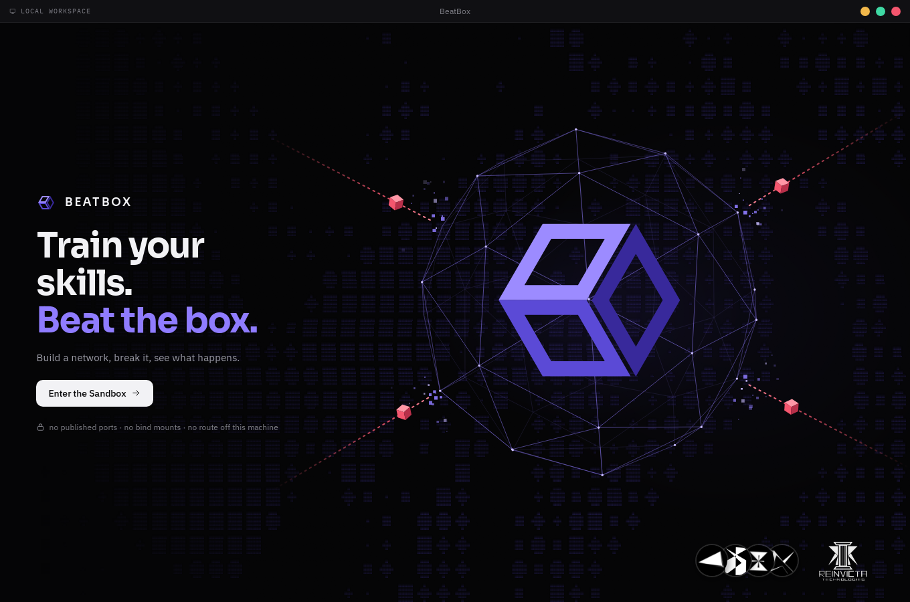
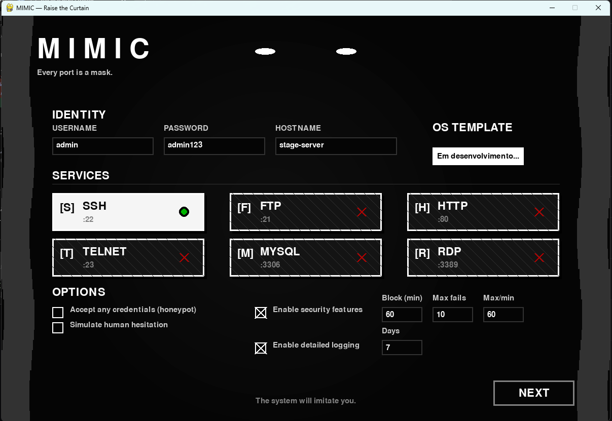
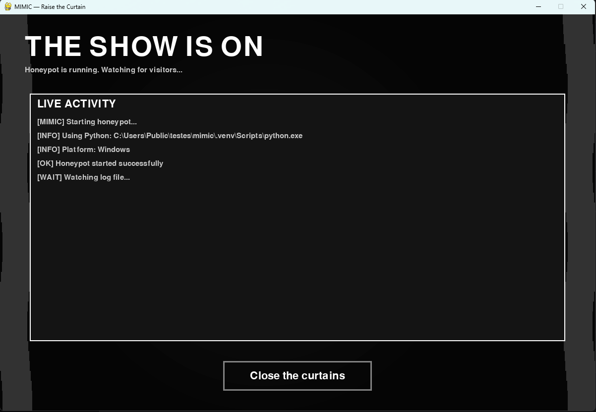
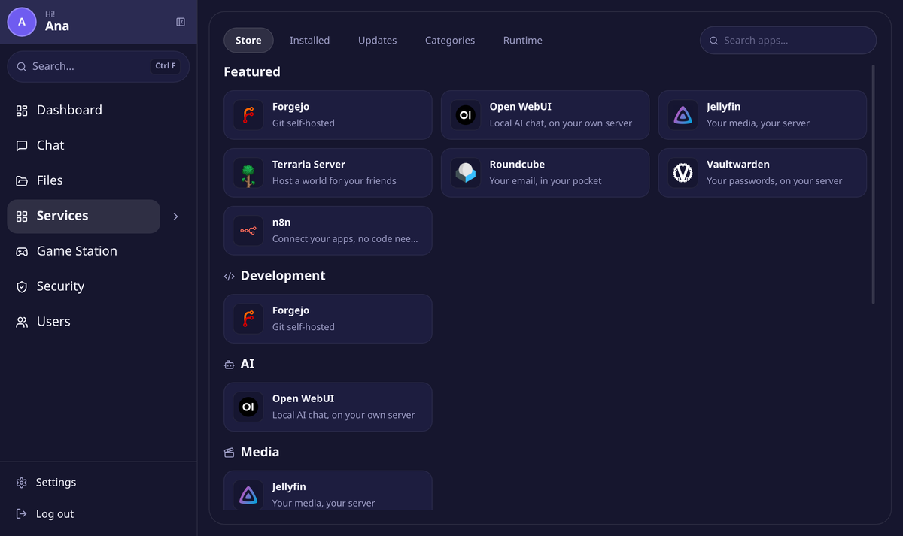
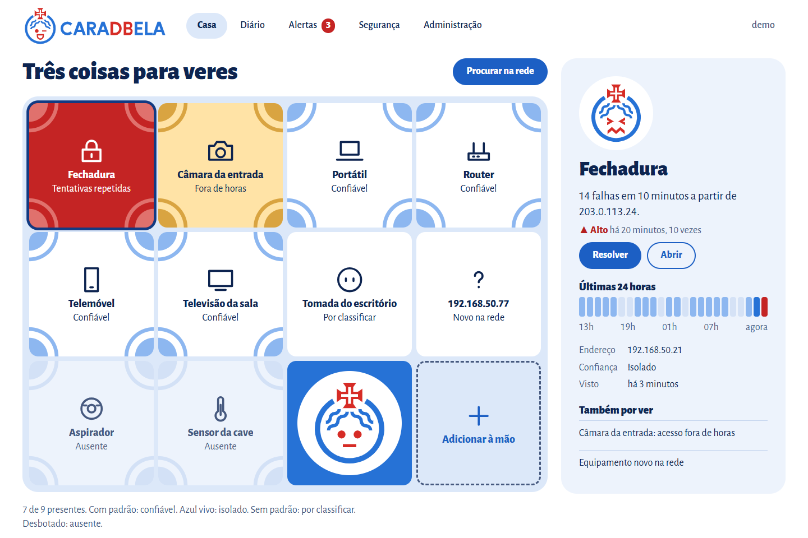

Trabalho em cibersegurança e software: construo sistemas e testo-os até partirem.
- — contribuições no último ano
- — repositórios públicos
- CST Cibersegurança · ISTEC
- Porto, Portugal
Percurso
- 5anos
- 3estágios
- 2cursos
-
2026 KodekraftersCybersecurity Specialist · Software Specialist estágio
Duas funções ao mesmo tempo: arrancar projetos novos e terminar projetos antigos que tinham ficado a meio.
- quando
- Mar – Jul 2026 · 5 meses
- onde
- Maia, Porto
- stack
- Cybersecurity · Software Development
-
2024–26 ISTECCST, Cibersegurança formação
Curso técnico superior de cibersegurança no Instituto Superior de Tecnologias Avançadas do Porto.
- quando
- Out 2024 – Jul 2026 · 22 meses
- onde
- Porto
-
2024 SigmaCodeWeb Developer estágio
Desenvolvimento web em C# e SQL, no último ano da ESAOF.
- quando
- Fev – Mai 2024 · 4 meses
- onde
- Porto
- stack
- C# · SQL
-
2023 PluricosméticaWeb Developer estágio
Primeiro estágio: desenvolvimento web em PHP e SQL, durante a ESAOF.
- quando
- Abr – Jun 2023 · 3 meses
- onde
- Maia, Porto
- stack
- PHP · SQL
-
2021–24 ESAOFGestão e Programação de Sistemas Informáticos formação
Onde tudo começou.
- quando
- Set 2021 – Jul 2024 · 35 meses
- onde
- Porto
Projetos
Cinco coisas que construí e de que gosto. Escolhe uma para ver o que é e como funciona.
BeatBox
Break the box. Beat the box.
Um laboratório de cibersegurança no teu computador: máquinas e redes reais que montas, atacas, defendes e deitas fora.
- stack
- Rust · Tauri · QEMU
- corre em
- Linux e Windows
- peso
- uma rede inteira ≈ 8 MB

- 01MontaMáquinas, switches, routers e servidores: arrastas e ligas.
- 02ParteAtaca, desconfigura. Os pontos guardados deixam voltar atrás.
- 03AprendeLabs com um botão Verificar dizem-te quando acertaste.
MIMIC
On stage, everyone thinks they’re the star. But the only thing they are, is the show.
Um honeypot. Quem ataca julga que encontrou um servidor verdadeiro; tudo o que escreve fica gravado.
- stack
- Python 3.11
- corre em
- Windows e Linux
- registos
- JSON, por sessão


- 01Escolhe a máscaraOs serviços a fingir e os banners, num configurador visual.
- 02Faz o papelShell falsa, ficheiros falsos, atrasos humanos. Parece real.
- 03Guarda tudoCada credencial e comando fica num registo JSON.
pocketme
O teu espaço de trabalho privado, no teu próprio hardware.
Chat, ficheiros e apps self-hosted num pequeno widget. Sem subscrições, sem o servidor de outra pessoa.
- stack
- TypeScript · Tauri
- corre em
- Windows, macOS, Linux
- licença
- MIT, open core

- 01InstalaUm servidor na tua máquina; a equipa encontra-o pelo nome na rede.
- 02Trabalha em equipaChat em tempo real com canais e ficheiros partilhados.
- 03Junta appsForgejo, Jellyfin, Vaultwarden… um clique cada, cada uma no seu contentor.
A tua IoT de forma bela.
Vigia os dispositivos inteligentes da rede, deteta acessos suspeitos e explica-os em português claro. Cada dispositivo é um azulejo; a cara mostra como está a rede.
- stack
- Node.js · Express · MongoDB
- firmware
- ESP32
- equipa
- projeto de equipa

- 01Os dispositivos contamFechaduras, câmaras e sensores enviam os acessos.
- 02As regras reconhecemFalhas repetidas, acessos de fora, fora de horas, equipamentos novos.
- 03A cara avisaCalma, atenta ou aflita, com o motivo explicado.
C.A.L.M.A.
O anexo que ninguém devia abrir.
Lê os anexos que chegam ao Gmail, calcula o risco e etiqueta a mensagem antes de alguém clicar. Feito com 0xadamastor.
- analisa
- Executáveis e PDF
- liga a
- Gmail e VirusTotal
- licença
- MIT
- Limpo0–49
- Suspeito50–74
- Infetado75–100
- 01Chega um anexoO C.A.L.M.A. apanha o correio novo com executáveis ou PDF.
- 02O modelo avaliaEstrutura, ofuscação e sinais conhecidos dão um risco de 0 a 100.
- 03O email é etiquetadoLimpo, Suspeito ou Infetado, antes de alguém o abrir.
Ferramentas
As teclas que uso todos os dias. Cada uma tem duas legendas: aquilo com que construo e aquilo com que parto. Liga o Quebrar, como o caps lock, e o teclado muda.
Como trabalho
- 01Construir com intenção.
- 02Perceber o sistema.
- 03Partir o que construo.
- 04Documentar tudo. // sim, isto também
- 05Nunca parar de aprender… e aprender
Vamos falar.
Seja uma oportunidade, uma colaboração ou só uma conversa sobre segurança: escreve-me.